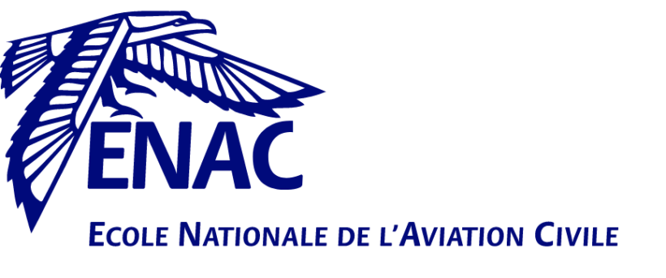

Md Siddiqur Rahman
PhD researcher - ENAC, IRIT, UT1, Université fédérale de Toulouse-Midi-Pyrénées
Everything in the world is full of information. All that information like pictures, songs, words, etc. is increasing. The advent of machine learning makes all that data meaningful. As a computer scientist, this depth of machine learning seems to me to be the magic of technology. The real world is actually very random. This chaotic world can only be passed through a kind of intelligence machine with information experience that is truly unimaginable. And that system will learn to acquire knowledge. From my point of view, in each of my next steps, I will explore the tools of art, science, and machine learning.